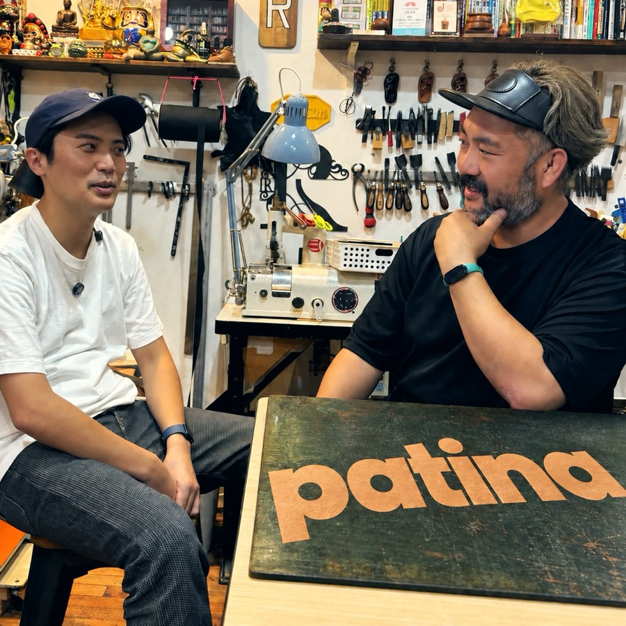
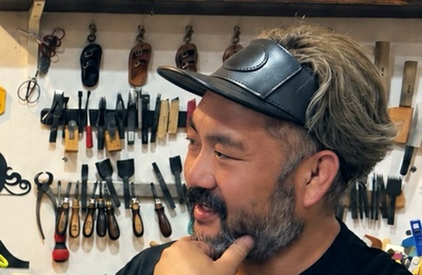
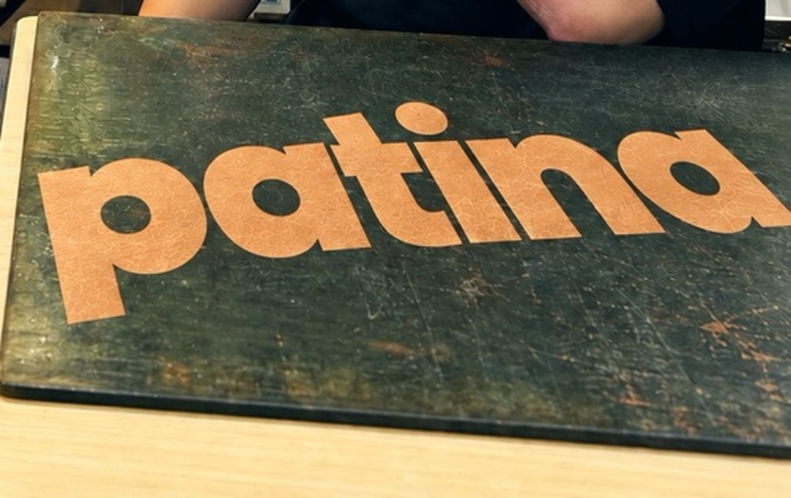

10年後のこのコインケース
ユウキが9/24に工房で作ったコインケースを持っていき、経年変化を予言してもらう。半年後に答え合わせをする回を、あとでやる。
持ち物：コインケース。写真を撮っておく
レザークラフト雑談ラジオ
patina

15:00に出れば、17:00のみんらじに間に合います。
9月24日に録り、25日に公開した回です。話したことと、まだ決まっていないこと。
うちはパティーナを押していこうと思って、これから使っていこうっていうひげちゃん #1 15:37
革を干してる倉庫が近くにあって、かくれんぼしてて怒られたことがありますひげちゃん #1 05:57。今は取引先になっているそうです
体験することでその人の目のクオリティが上がるひげちゃん #1 15:06
体験も、僕が作るのも、同じ価格でやってるんですひげちゃん #1 09:38
ランチで決着済みかを聞いて、済んだものにチェックを入れてください。
本編30分。コーナー3本は、準備ゼロで話せるものから選びました。
ユウキが9/24に工房で作ったコインケースを持っていき、経年変化を予言してもらう。半年後に答え合わせをする回を、あとでやる。
持ち物：コインケース。写真を撮っておく

7min1回に1道具。値段と、どこで買ったかまで言う。#1で、道具の名前を知るだけで見え方が変わると話した流れ。
ひげちゃんに頼む：今日の1道具を決めてもらう
原価と売値を当てる。ユウキが毎回外す役。#1の手まりの話（1個1万〜2万円）につながる。
ひげちゃんに頼む：出題する革製品を3つ選んでもらう
革の身の上相談は、リスナーのお便りが要るので、#2では見送ります。工房ASMRの5分は、04の作業中の音を録って、固定ジングルの素材にします。
全6回の第1回「革を選ぶ。栃木レザーと他の革の違い」。素人のユウキがゼロから二つ折り財布を作る連載です。

12問。#1で話した工房の客層や名前の由来は、聞き直しません。聞いた問いにチェックを入れてください。
いつもの機材に読み替えて、足りない行は消してください。
編集と配信は、ユウキ側のパイプラインで進めます。